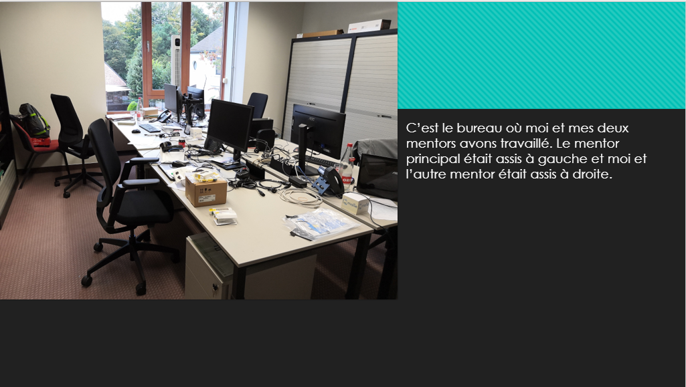
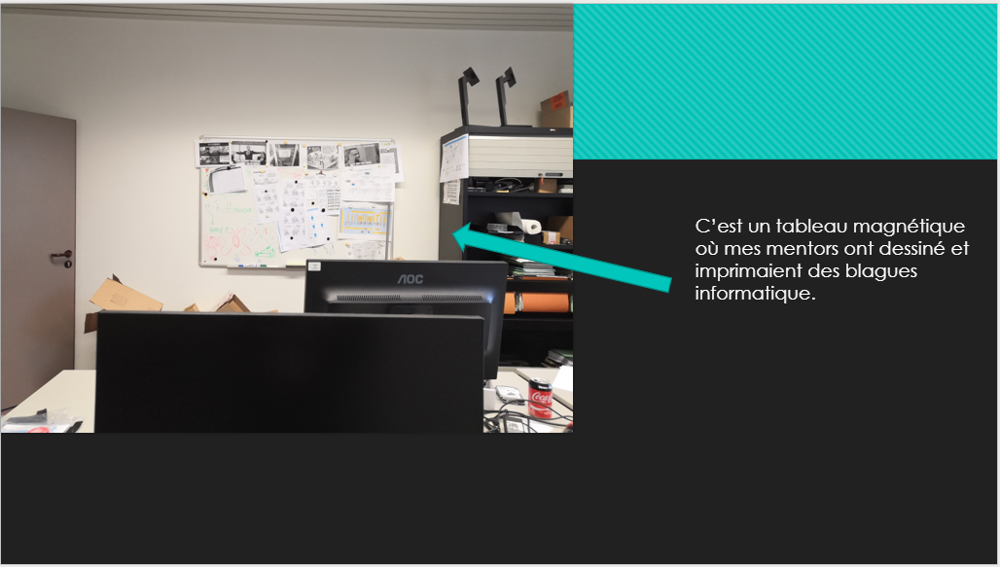

About me!
Hallo mijn naam is Michiel Dries ik ben 18 jaar oud, ik woon in Halle-Zoersel. ik volg Informatica en Netwerkbeheer in Immaculata instituut Oostmalle. sinds ik al 8 jaar was, was ik gefacineerd door games en computers. Toen ik moest kiezen tussen scholen hier in de buurt moest ik wel voor immaculata kiezen. een school dat hard gebaseerd is op Informatica. ik zou denkend dat ik mijn droom kon waarmaken door games te developen. of websites te maken, ik ben erg geboeit hoe een spel tewerk gaat. Ik heb veel dromen maar ik zou zo graag later werken bij Riot games. dit bedrijf heeft mij in gaming gebracht en ik hou van hun games.
Riot GamesNederlands
Voor nederlands moest ik 3 taken maken de Solicitatiemail, Het interview, De dankmail.
Solicitatiemail
Geachte heer/mevrouw
Ik, Michiel Dries, student van het Immaculata Instituut waar ik de richting Informatica en Netwerk beheer volg in het vijfde jaar, ben op zoek naar een observatiestage voor volgend jaar om mijn geïntegreerde proef te kunnen starten. Dat zal zich plaatsvinden in de week van 30 September tot 5 Oktober 2019 afspelen. Tijdens deze vijf dagen zou ik graag kennis maken met uw bedrijf en de werkingen hoe jullie in praktijk gaan.
Jullie bedrijf interesseert mij enorm. Ik kies voor (een bedrijf waar ik zou kiezen). Dit bedrijf werkt veel interesses bij mij op. De praktijk die ze daar uitvoeren lijkt me heel interessant om verder op te studeren. Ik verkies Software ontwikkeling boven hardware maar ik doe het even graag.
De reden waarom ik stage zou willen komen doen is omdat ik zeer positief ben ingesteld en goedlachs ben. Thuis worden de talen Engels en Nederlands gesproken. Ik heb door school ook wat ervaring met Duits, Engels.
Vanaf mijn jonge 15 jaar werk ik bij mijn ooms bedrijf Attractieverhuur Dries. In de kerstvakantie van 2018 heb ik werk aangevraagd aan het bedrijf ISS. Ik ben een leergierige, persoon die de praktijk snel begrijpt. Ik heb een drie jaar lange opleiding in Office gekregen dus ik kan heel erg goed om met het toetsenbord en zeker met de pc zelf.
Gelieve zo snel mogelijk contact met mij op te nemen op het nummer: 0485 15 71 30 of op mijn mailadres, driesmimi0@gmail.com. Indien ik na een week niets heb kunnen vernemen van jullie zal ik telefonisch contact opnemen.
Graag wil ik u alvast bedanken voor uw tijd en ik kijk uit naar een antwoord van u.
Met vriendelijke groeten
Michiel Dries
Lotelinglaan 8
2980 ZOERSEL
driesmimi0@gmail.com
Interview
De persoon die ik heb geïnterviewd is Toon. Hij wekt al anderhalf jaar lang hier in het gemeentehuis van Malle. Het beroep houdt eigenlijk heel veel in. Hij verwoordde het als: “Wat ik hier doe, is verschillend, je zou kunnen zeggen van a tot z.” Van mensen hun wachtwoord resetten tot de telefoons die ze in het gemeentehuis zelf moeten maken. Nog een voorbeeld is dat hij nieuw aangekochte pc’s moet rebooten en programma’s moet opzetten zodat ze geschikt zijn om te kunnen werken. Deze job werd aangeraden door een vriend van hem, Manu. Manu is de leider in de afdeling IT. Met een diploma op het middelbaar Mariagaarde had hij niet genoeg kennis voor deze job waardoor hij eerst avondscholing heeft gevolgd voor zijn eerste IT-job.
Als zijn eerste job werkte hij in een grote fabriek genaamd Atlas Copco in Wilrijk. Zijn job is vrij aangenaam, hoewel ik hem slechts voor een week assisteerde, genoot ik er al van om deze job te doen. Voor hem is het meest aangenaam de variatie van werk: het is niet altijd hetzelfde zoals bijvoorbeeld een week aan hetzelfde project werken. Hier kan hij doen wat hij wil om het hier beter te maken. Hij heeft niet echt onaangename momenten hier behalve als er lastige telefoons zijn van mensen uit het buitenland of mensen die niet goed Nederlands kunnen praten.
Mijn mening.
Om eerlijk te zijn, ik zie deze job eigenlijk wel als iets heel aangenaams.Ik wou eerst iets met koken doen maar nu ben ik nog altijd heel onzeker. Ik zou misschien verder kunnen studeren met koken en een studentenjob doen in de IT-richting. Het leukste aan deze job is de vrijheid die je krijgt. Je hebt zoveel mogelijkheden hier waar je eigenlijk zelf kan kiezen wat je doet.
Dankmail
Michiel Dries
Lotelinglaan 8
2980 ZOERSEL
Manu De Broeck
Informatica
Gemeente Malle
Antwerpsesteenweg 246
2390 Malle
Dankmail observatieperiod
Geachte heer Manu
Voor mijn geïntegreerde proef heb ik tussen 30 september en 4 oktober een week observatiestage gedaan bij gemeente Malle.
Als eerste wil ik ubedanken dat u zo snel had gereageerd op mijn mail en dat ik nog altijd een observatiestage mocht doen. Ik kwam een beetje laat met mijn mail maar u vond het niet zo erg. Ik wil u ook bedanken voor alle informatie jullie mij hebben gegeven. Het instellen en aansluiten van apparaten was heel erg leuk en ik heb echt genoten van deze observatiestage.
Ik heb veel bijgeleerd van hoe informatica in zijn werk gaat in een bedrijf tot hoe een onderdeel van een switch werkt . De kleine opdrachtjes waren heel erg leuk aangezien we die niet op school doen.
Ik ben nu bezig met mijn taken van mijn gip en het vervolg van die taken moet ik op een website zetten. Als ik klaar ben met mijn website, zal ik zo snel mogelijk de url sturen.
Nogmaals bedankt voor alle informatie jullie mij hebben gegeven en voor een leuke en gezellige week.
Met vriendelijke groeten
Michiel Dries
Leerling Immaculata Secundair Oostmalle
Informatica
Hieronder vindt u mijn taken van Informatica
Logboek
30/09
1. 3 nieuwe aangekochten thin clients checken of ze werken en aansluiten aan het netwerk
2. De Thin clients koppelen aan het netwerk zodat ze de benodigde software hebben.
3. Uitleg gekregen hoe hun LAN eruit ziet en hun “datacenter” bekeken.
4. De werking van hun VLAN
5. Ze hebben ook in malle 16 acces points voor hun wifi waar ik er 1 mocht bestuderen hoe het eruit zag en hoe het werkte.
01/10
1. Werking van Proxmox, het is een programma dat spams en mails kan blackliste waardoor ze sommige mails niet aankrijgen.
2. De 3 pc die gisteren werden geboot hadden we vandaag klaargemaakt.
3. Nieuw aangekochte switch booten en 6 ethernet poorten een naam geven zodat ze makkelijk te verbinden zijn met de 6 acces points voor de wifi.
4. Switch plaatsen in een school. Een daar de accespoints verwisselen van de ouden naar de nieuwe switch.
5. Een slot op de achterkant van een oude switch steken zodat er meer bit doorkan.
02/10
1. Printmodule in een bedrijf vervangen
2. Monitor stand Instellen.
3. Laptops externe geheugens vervangen door ssd.
03/10
1. 2 monitoren instellen
2. Een thin client vervangen. 9.30
3. Een tweede thin client vervangen 13.30
4. Monitor stand maken.
5. Desktop instellen voor de kleuterschool
04/10
1. Laptop ssd instellen
2. Oude desktop vervangen
3. 4 telefoons herstarten op dhcp zetten en op vlan zetten
4. 3 nieuwe laptops accounts maken voor de leerlingen.
Case Study
Mijn Case Study ging over Django en Fetching in Python.
br
1. Als eerste moest ik Django instaleren. Dit doe je via powershell, je moet 3 (4) codes ingeven zodat het geïnstalleerd wordt
2. Pip install virtualenvwrapper-win
3. Mkvirtualenv myproject
4. (als je al een project had aangemaakt gebruik) workon myproject
5. Pip install django
6. Mijn eerste project was een site en dit waren de codes
Dit project had ik automatisch al in een githubrepository gezet. Link
Een aantal oefeningen met het fetchen dat ik heb gemaakt waren
Het fetchen van een jpg een tekstdocument een array, info van een site
Jpg-oefening
Met als uitkomst krijg je een site met de foto die je in je map hebt opgeslagen.
Tekstdocument-oefening
Array/groep jpg
Koopadvies
Mijn moeder zou graag een nieuwe laptop hebben. ze had graag een snellere laptop met meer geheugen zodat ze haar foto's daar kon opgeslagen. daarvoor had ik een laptop gekozen met een SSD 500GB, desnoods een extra externe schijf. De laptop heeft een goede resolutie voor all haar foto's. Mijn moeder wouw ook nog een extra muis hebben. deze wouw ze draadloos en liefst niet te duur. hiervoor heb ik de Logitech M705 gekozen. deze muis had ik in het verleden al gebruikt en is heel erg handig aangezien het 2 aanpasbare knoppen aan de zijkant heeft
Belangrijke hardware
de interne geheugen is 16 GB groot.
Type opslag is een SSD met 512 GB.
Processortype: het is een intel core i5.
Het draait op Windows 10.
En het heeft een 15.6 Inch scherm dat een versnelling heeft van 60 hz.
Extra Randaparaat
De link voor de muis vind u hier, en de link voor de laptop vind u hier
Huisstijl Van het bedrijf
Je hebt 3 logos van malle 1 voor de site, 1 voor toerisme en algemeen van gemeente malle. De enigste veranderingen aan het logo van malle is dat het gekleurd is geworden. Vroeger was het logo zwart met wit.
Het logo van de site zelf staat boven gecentreerd als je de site open doet. Malle heeft gekozen voor de kleuren blauw; wit en groen aangezien hun site blauw wit en groen is.
Net zoals het logo van het gemeente huis is het logo van de basis school helemaal het zelfde van kleur
Malle heeft overlaats zijn huistijl opgefrist. eigenlijk hetzelfde logo maar dan ingevuld met blauw.

URL van hun site, malle gebruikt altijd 3 kleuren, wit groen en blauw. link
Solicitatiemail
]
Templates
Link van de gepubliceerde webste: Hier
Link naar de Repository: Hier
TestOpstelling/ Bedrijfsnetwerk in Hyper-v
in deze taak heb je Hyper-v nodig, je hebt Pfsense ook nodig.
dit is de link van mijn stappenplan voor je eigen bedrijfsnetwerk te maken in Hyper-v,:klik deze link Link
Engels
Script Engels
Voor engels moesten we een script en een video maken over het leven van een "IT-Student".
als eerste moesten we een script maken. dit script is meegemaakt door Jarnick Sas zijn website vind u hier, uiteindelijk hebben we dit script niet gebruikt maar iets originelers gemaakt.
Frans
Bienvenue à tous, c’est mon site web !
pour le français nous avons dû faire un reportage photo et 4 questions sur notre IT-Tappa.






Question 1: Combien d’OneNote différentes il y a ?
OneNote a 5 types différents. La première version est sortie en 2003. Tous les 3/ 4 ans, une nouvelle version a été réalisée.(2003, 2007, 2010, 2013, 2016.
Question 2: Comment créer une nouvelle section?
1. ouvrir Onenote.
2. cliquez à droite sur l'endroit où se trouvent vos sections.
3. cliquez sur la nouvelle section.
Question 3: Comment créer de nouvelles pages?
1. une fois que vous aurez créé la nouvelle section, vous vous retrouverez avec des pages.
2. cliquez sur la nouvelle pages.
Question 4: Sur quel système d’exploitation il fonctionne?
Il fonctionne sur plusieurs systèmes, le plus connu est, Windows, Android, IOS.
Ondernemend Project
Hier ziet u mijn bedrijfsanalyse van het gemeentehuis malle
De stage dat ik had gekozen is een stage in de gemeente van malle. Het gemeente huis vind zich plaats op Antwerps steenweg 246, 2390 Malle, gemeente huis malle heeft meerdere gebouwen in hun bezit. Bijvoorbeeld de kleuterschool De Horizon, OCMW malle, enz. Naast het gemeentehuis staat de brandweerkazerne en een bus halte waardoor het ook makkelijk bereikbaar. dit gemeentehuis verdeelt zich in meerdere secties. Informatica, Media, een secretariaat boven in het gebouw en beneden. Het secretariaat beneden is eerder voor de burgers en het secretariaat dat zich boven bevindt is eerder voor de werknemers. Er is ook nog een extra kamer met mensen die burgers helpen via de telefoon. De gemeente malle heeft ook een website (https://www.malle.be/). Op hun website staat een sectie met ontdek malle, daar kan je veel informatie vinden over wat je allemaal kan bezoeken. Veel meer zou je niet kunnen zeggen over het gemeentehuis. Ze zijn geen bedrijf of hebben geen leveranciers. Ze verkopen wel vuilniszakken. Het gemeentehuis heeft geen ondernemingsnummer